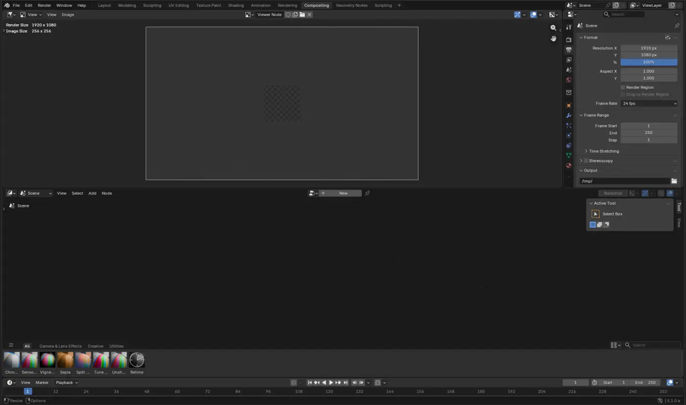

Same file, different toolset
A workspace is a saved layout, not a mode.
Clicking Sculpting doesn't change your file — it swaps which editors are on screen and which tool is active, so the ones that matter for sculpting are already open. You could assemble any of these by hand from the same building blocks (a 3D Viewport, a node editor, a timeline); the tabs just save you the setup.

The Interface & Navigation lesson lives in Layout. Every build lesson in the Blender Fundamentals Pathway works in Modeling. Materials, Lighting & Render covers both Shading and Rendering. This pathway fills in the tabs that pathway doesn't reach.
Tab-to-lesson map
Find your tab, open its lesson.
In tab-bar order. Live cards link straight to a direct tutorial; the rest are honestly marked as not built yet instead of linking somewhere that doesn't fit.
Just-in-time references
Look up the problem you have now.
Do not try to memorize the entire manual. Use these official sources when a lesson leaves you with a specific question, then return to your project and test the answer.
How workspaces work, and how to create or reorder your own — useful once you outgrow the defaults.
OFFICIAL REFERENCEBlender ManualSearch the exact tool or panel name when you need a deeper explanation or a setting has moved.
OFFICIAL SUPPORTSupport & bug reportingCommunity help, documentation, troubleshooting, and the correct path for reporting a reproducible Blender bug.
Every setting used by the Sculpting, Geometry Nodes, and Compositing lessons has an authentic Blender image or an explicit editor-and-menu breadcrumb. See the setting audit for the complete inventory and official references.
- Confirm the version.
- Follow the named editor and mode.
- Use the breadcrumb when an older screenshot differs.
- Test in a copy of the file.